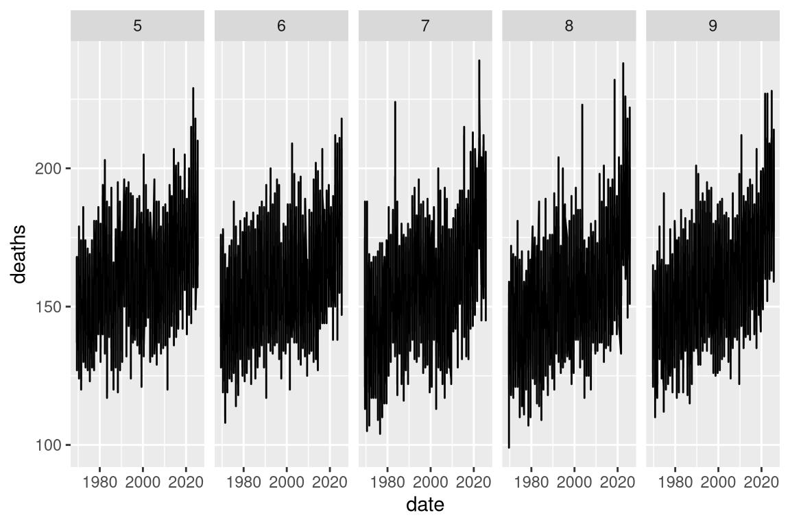
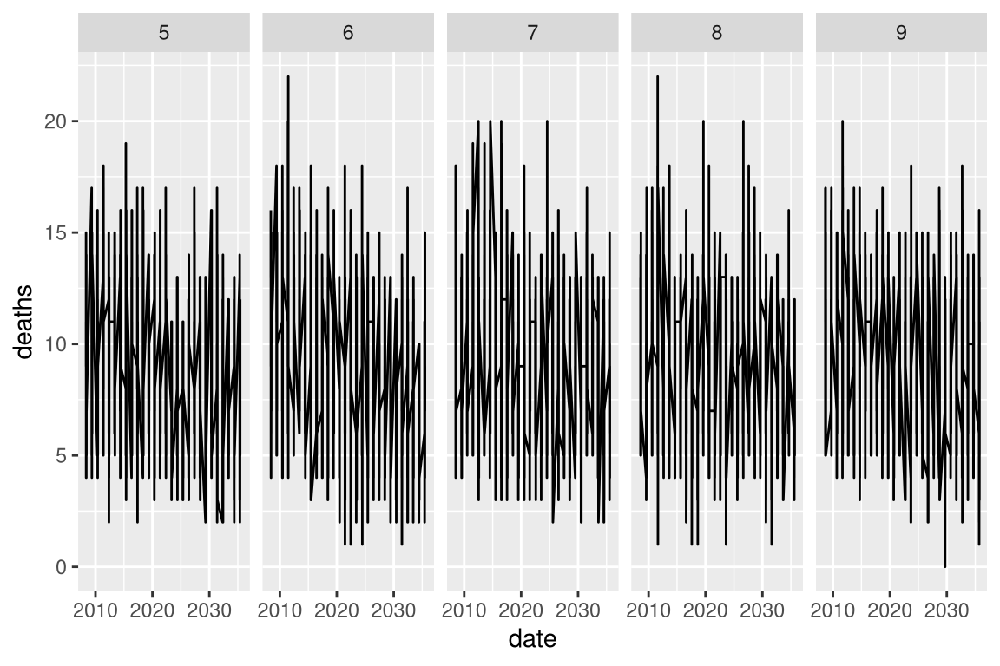
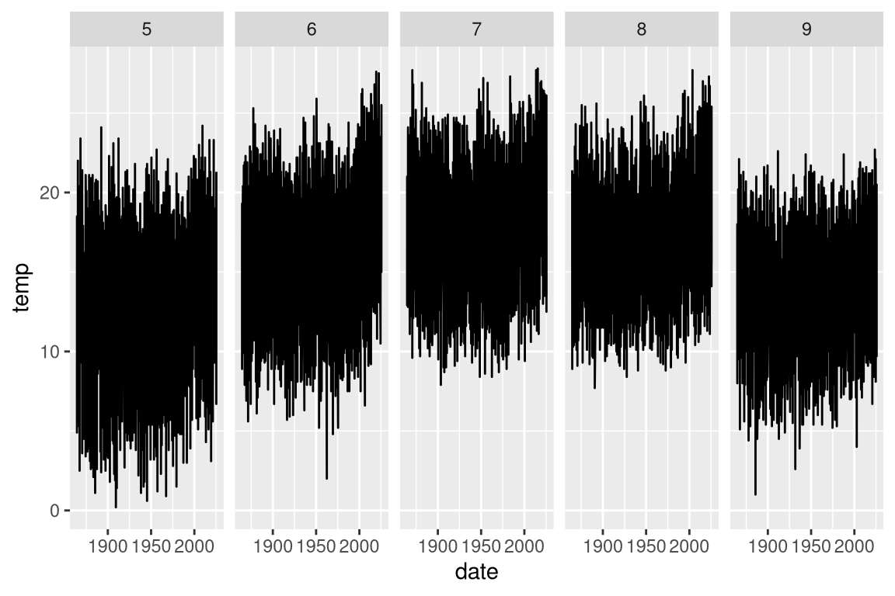
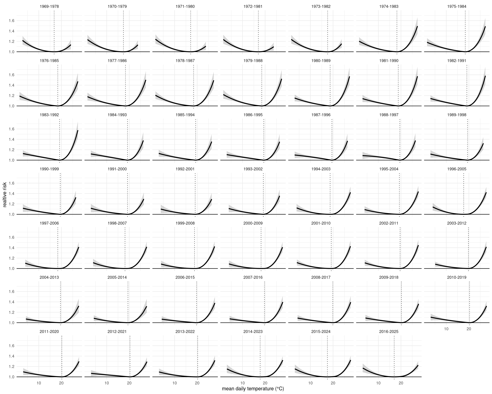
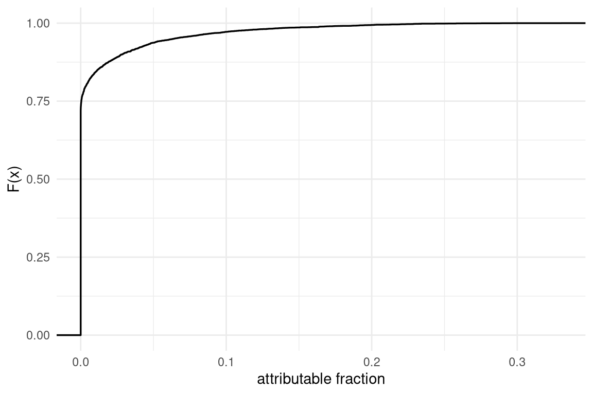
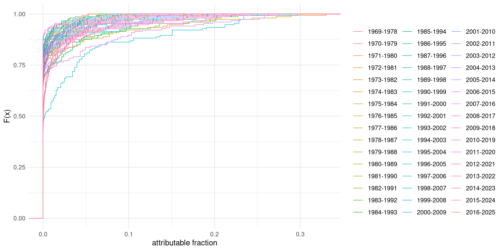
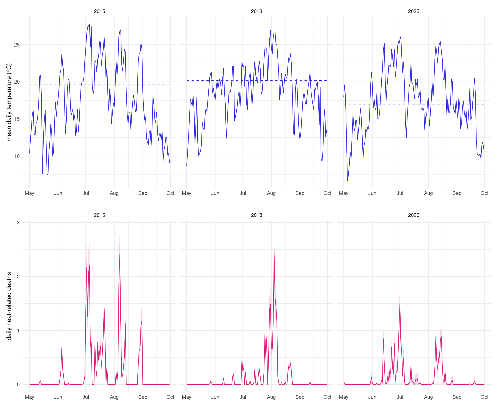
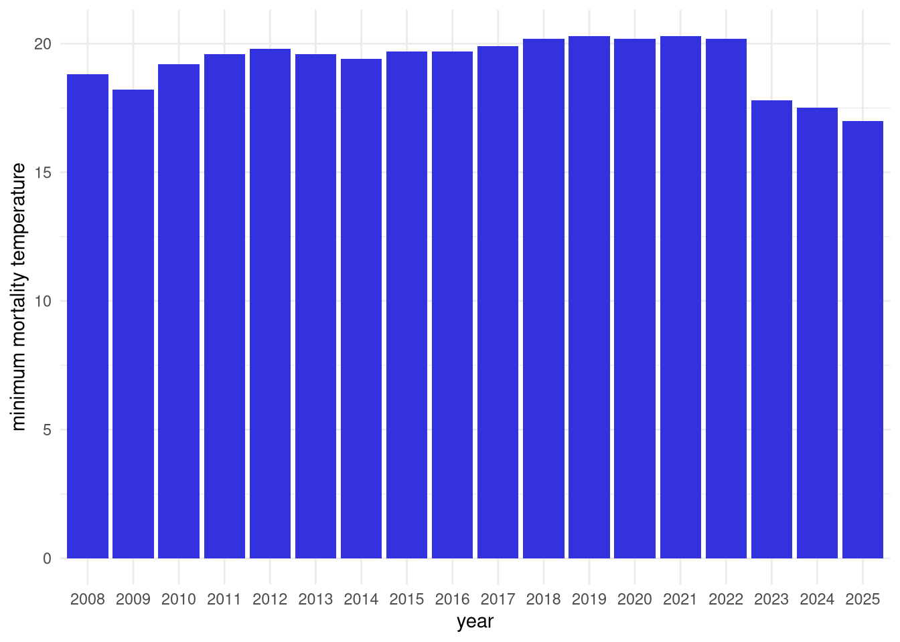

library(dlnm) # distributed lag non-linear models
library(lubridate) # date, time
library(mgcv) # flexible regressions
library(patchwork) # multiple graphics
library(renv) # R environment
library(rprojroot) # RProjekt root finden
library(splines) # non-linear models
library(tidyverse) # tidyverse1 Heat-Related Mortality
1.1 Preparation
1.1.1 Packages
1.1.2 Paths
# project root
root <- find_root(is_rstudio_project)
# deaths: city of Zurich
path_death_zh <- "https://data.stadt-zuerich.ch/dataset/bev_tag_todesfaelle_quartier_geschl_ag_herkunft_od4211/download/BEV421OD4211.csv"
# deaths: FSO
path_death_fso <- file.path(root, "data/deaths-FSO.csv")
# file from Swiss Stats Explorer:
# https://dv.stats.swiss?chartId=25456e79-3ef6-4562-b23a-dad3cd67c139
# https://stats.swiss/vis?lc=de&fs[0]=Erhebung%252C%20Statistik%2C0%7CStatistik%20der%20nat%C3%BCrlichen%20Bev%C3%B6lkerungsbewegung%23BEVNAT%23&pg=10&fc=Erhebung%2C%20Statistik&bp=true&snb=19&df[ds]=ds%3Adisseminate&df[id]=DF_BEVNAT_EVENEMENTS_1&df[ag]=CH1.BEVNAT&df[vs]=1.0.0&dq=4.8100._T.D&to[TIME_PERIOD]=true&pd=1969-01-01%2C2025-12-31&vw=tb
# daily temperature at SMA Zurich (harmonized time series)
path_temp <- "https://data.geo.admin.ch/ch.meteoschweiz.ogd-nbcn/sma/ogd-nbcn_sma_d_historical.csv"1.1.3 Functions
source(file.path(root, "R/RR_fun.R"))1.1.4 Parameter
# last year with both Zurich and FSO data
# (complete year: January to December)
last_year <- 20251.1.5 Graphics
# colors
# https://github.com/StatistikStadtZuerich/zuericolors/blob/main/R/palettes.R
qual12 <- c("#3431DE", "#0A8DF6", "#23C3F1", "#7B4FB7", "#DB247D", "#FB737E",
"#007C78", "#1F9E31", "#99C32E", "#9A5B01", "#FF720C", "#FBB900")Grafiken mit Zoom-Funktionalität.
#| echo: true #| results: false #| warning: false #| message: false1.2 Import
1.2.1 Deaths: FSO
# import deaths
dea_imp <- read_csv(path_death_fso) |>
rename(date = TIME_PERIOD, deaths = OBS_VALUE) |>
select(date, deaths)Rows: 20819 Columns: 18
── Column specification ────────────────────────────────────────────────────────
Delimiter: ","
chr (12): STRUCTURE, STRUCTURE_ID, STRUCTURE_NAME, ACTION, Ereignisart, Kan...
dbl (3): BEVNAT_EVENT, CANTON, OBS_VALUE
lgl (2): Jahr, Monat, Tag, Beobachtungswert
date (1): TIME_PERIOD
ℹ Use `spec()` to retrieve the full column specification for this data.
ℹ Specify the column types or set `show_col_types = FALSE` to quiet this message.# duplicates? no
dea_imp |>
count(date) |>
filter(n == max(n))# A tibble: 20,819 × 2
date n
<date> <int>
1 1969-01-01 1
2 1969-01-02 1
3 1969-01-03 1
4 1969-01-04 1
5 1969-01-05 1
6 1969-01-06 1
7 1969-01-07 1
8 1969-01-08 1
9 1969-01-09 1
10 1969-01-10 1
# ℹ 20,809 more rows# deaths for all days from May to September
dea <- tibble(date = seq(min(dea_imp$date), max(dea_imp$date), by = "day")) |>
left_join(dea_imp, by = "date") |>
mutate(deaths = replace_na(deaths, 0),
month = month(date)) |>
filter(month >= 5, month <= 9) |>
select(date, month, deaths)First plot of FSO death data

1.2.2 Deaths: Zurich
# import deaths
dea_imp_zh <- read_csv(path_death_zh) |>
mutate(date = as.Date(GueltigAbDat)) |>
group_by(date) |>
summarise(deaths = sum(AnzSterWir, na.rm = TRUE), .groups = "drop")Rows: 93444 Columns: 17
── Column specification ────────────────────────────────────────────────────────
Delimiter: ","
chr (8): SexLang, AlterV20Kurz, HerkunftLang, KreisLang, QuarCd, QuarLang, D...
dbl (9): GueltigAbDatJahr, GueltigAbDatMM, GueltigAbDatDD, GueltigAbDat, Sex...
ℹ Use `spec()` to retrieve the full column specification for this data.
ℹ Specify the column types or set `show_col_types = FALSE` to quiet this message.# duplicates? no
dea_imp_zh |>
count(date) |>
filter(n == max(n))# A tibble: 10,345 × 2
date n
<date> <int>
1 2008-01-02 1
2 2008-01-03 1
3 2008-01-04 1
4 2008-01-05 1
5 2008-01-06 1
6 2008-01-07 1
7 2008-01-08 1
8 2008-01-09 1
9 2008-01-10 1
10 2008-01-11 1
# ℹ 10,335 more rows# deaths for all days from May to September
dea_zh <- tibble(date = seq(min(dea_imp_zh$date), max(dea_imp_zh$date), by = "day")) |>
left_join(dea_imp_zh, by = "date") |>
mutate(deaths = replace_na(deaths, 0),
month = month(date)) |>
filter(month >= 5, month <= 9) |>
select(date, month, deaths)
1.2.3 Temperature
# import mean daily temperature
tem <- read_delim(path_temp, delim = ";") |>
mutate(date = as.Date(reference_timestamp, format = "%d.%m.%Y %H:%M")) |>
rename(temp = ths200d0) |>
select(date, temp)Rows: 59170 Columns: 8
── Column specification ────────────────────────────────────────────────────────
Delimiter: ";"
chr (2): station_abbr, reference_timestamp
dbl (6): ths200dn, ths200dx, ths200d0, th9120dv, th91dndv, th91dxdv
ℹ Use `spec()` to retrieve the full column specification for this data.
ℹ Specify the column types or set `show_col_types = FALSE` to quiet this message.# checks
tem |>
mutate(diff = c(1, diff(date))) |>
summarize(min_date_diff = min(diff),
max_date_diff = max(diff),
temp_NA = sum(is.na(temp)))# A tibble: 1 × 3
min_date_diff max_date_diff temp_NA
<dbl> <dbl> <int>
1 1 1 0First plot for temperature data

1.2.4 FSO-Death and temperature combined
# data is limited by death values available
range(dea$date)[1] "1969-05-01" "2025-09-30"range(tem$date)[1] "1864-01-01" "2025-12-31"# imported data
total <- dea |>
left_join(tem, by = "date")
# check
nrow(dea)[1] 8721nrow(total)[1] 87211.3 Analysis
1.3.1 Relative risk (RR)
Relative risk estimation with FSO death data.
# years (only if ten years with past data available)
years <- (year(min(total$date))+9) : year(max(total$date))
# data: relative risk
RR_dat <- map_dfr(years, function(y) {
RR_fun(
date = total$date,
temp = total$temp,
death = total$deaths,
year_eval = y
)
})1.3.2 Exposure-response relationship
Exposure-response relationship with FSO death data.

1.3.3 Attributable fraction
Attributable fraction with FSO death data.
AF <- RR_dat |>
filter(year_pred == 1) |>
mutate(AF = pmax(0, if_else(temp > MMT, (RR - 1) / RR, 0)),
AF_low = pmax(0, if_else(temp > MMT, (RR_low - 1) / RR_low, 0)),
AF_high = pmax(0, if_else(temp > MMT, (RR_high - 1) / RR_high, 0)))Cumulative distribution of the attributable fraction


1.3.4 Attributable deaths
Attributable deaths with Zurich death data.
Zurich death data begins later than the estimated AF; therefore, right join on Zurich death data.
AD <- AF |>
select(year, date, temp, MMT, RR, RR_low, RR_high, period,
AF, AF_low, AF_high) |>
right_join(dea_zh, by = "date") |>
mutate(AD = AF * deaths,
AD_low = AF_low * deaths,
AD_high = AF_high * deaths) |>
filter(year <= last_year)1.4 Results
1.4.5 selected years (daily values)

1.4.6 MMT by year

…